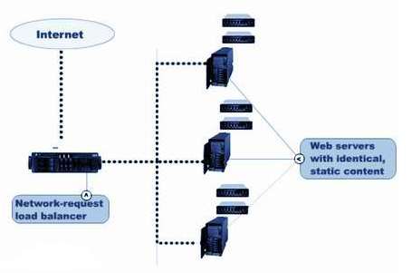
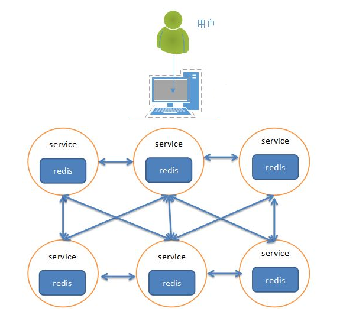
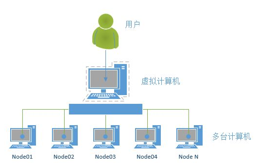

为什么要有集群
- 之前我们已经讲了主从的概念，一主可以多从，如果同时的访问量过大(1000w),主服务肯定就会挂掉，数据服务就挂掉了或者发生自然灾难
- 大公司都会有很多的服务器(华东地区、华南地区、华中地区、华北地区、西北地区、西南地区、东北地区、台港澳地区机房)
集群的概念
- 集群是一组相互独立的、通过高速网络互联的计算机，它们构成了一个组，并以单一系统的模式加以管理。一个客户与集群相互作用时，集群像是一个独立的服务器。集群配置是用于提高可用性和可缩放性。 
当请求到来首先由负载均衡服务器处理，把请求转发到另外的一台服务器上。
redis集群
- 分类
- 软件层面
- 硬件层面
- 软件层面：只有一台电脑，在这一台电脑上启动了多个redis服务。

- 硬件层面：存在多台实体的电脑，每台电脑上都启动了一个redis或者多个redis服务。

搭建集群
- 当前拥有两台主机172.16.179.130、172.16.179.131，这⾥的IP在使⽤时要改为实际值
参考阅读
- redis集群搭建 http://www.cnblogs.com/wuxl360/p/5920330.html
- [Python]搭建redis集群 http://blog.5ibc.net/p/51020.html